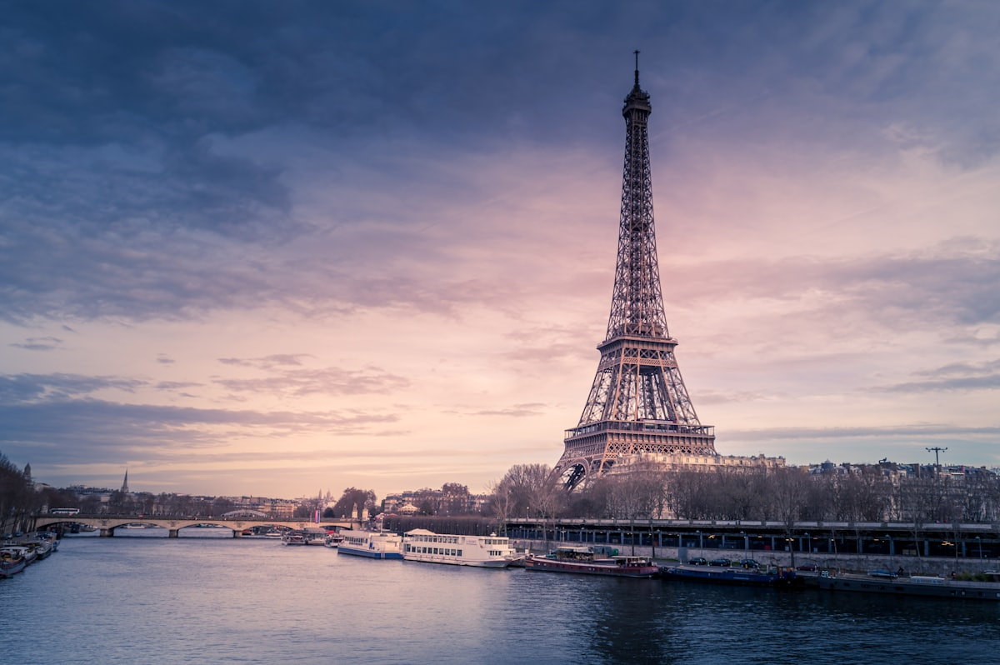
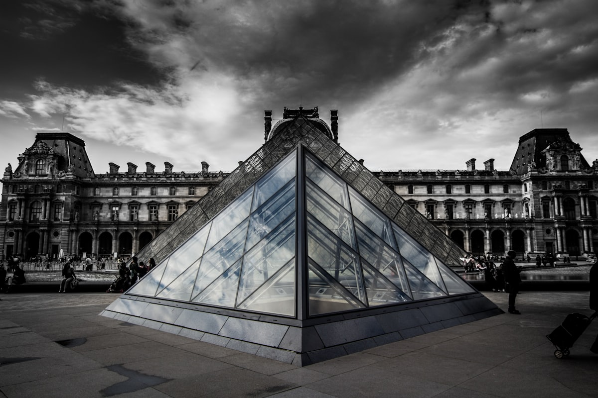
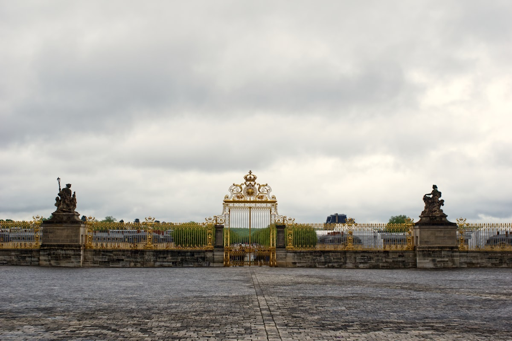
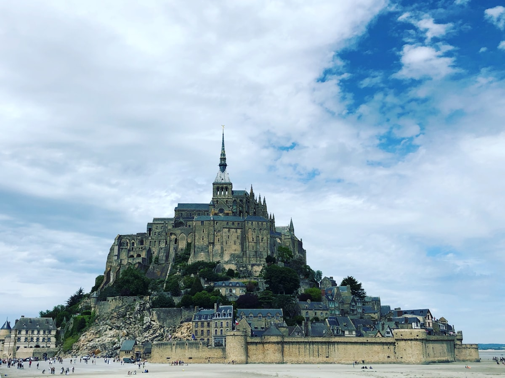
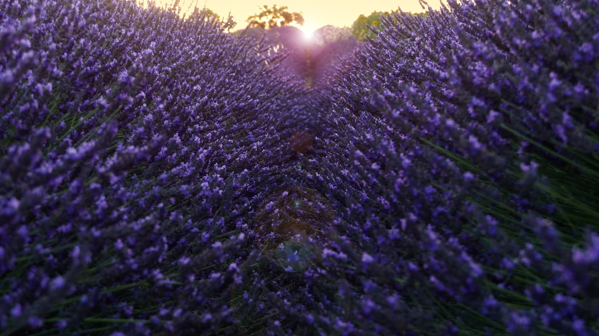
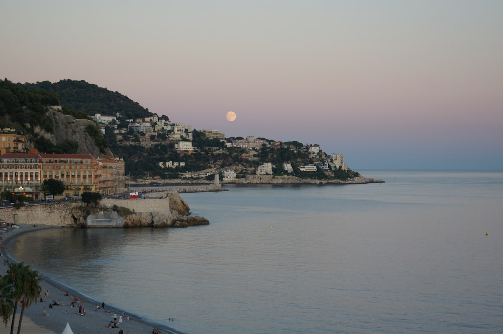
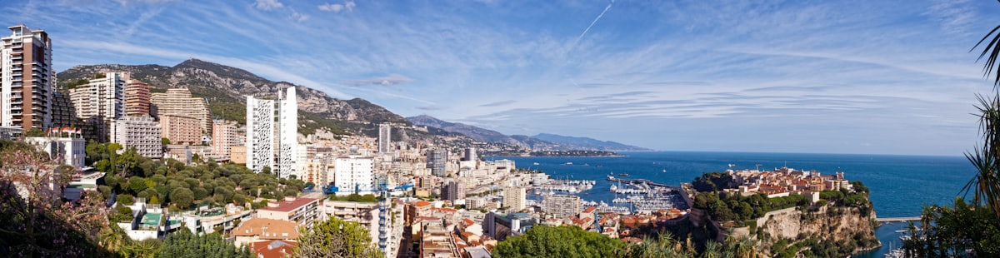
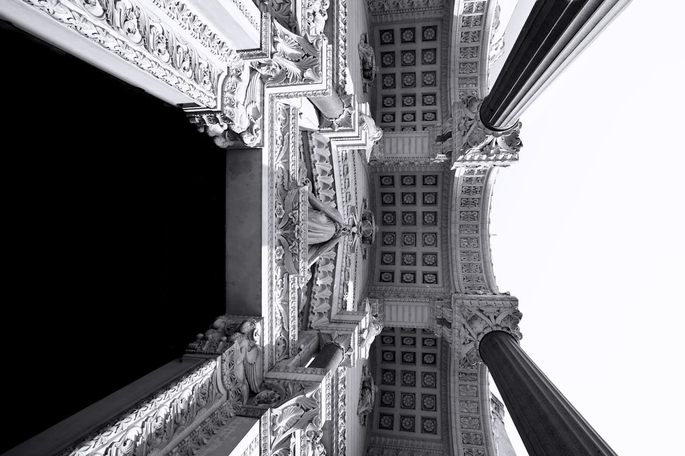

| 事项 | 结论 |
|---|---|
| 事项 | 结论 |
| 签证（最关键） | 申根签证：法国领区办理，需护照+照片+行程单+酒店机票订单+医疗保险，材料齐全约 10–15 个工作日；申根签可顺游周边申根国 |
| 时差 | 夏令时（3 月底–10 月底）比北京慢 6 小时，冬令时慢 7 小时 |
| 电源插座 | 220V 欧标 C/E 型（两圆脚），国内充电器需带转换插头 |
| 货币 | 欧元 EUR，1€ ≈ 7.8 元；刷卡极普及，备 100–200€ 现金 |
| 最佳季节 | 5–6 月、9–10 月天气最佳；6 月中–7 月底普罗旺斯薰衣草季；7–8 月南法酷热且游客最多 |
| 行程链 | 巴黎 → 吉维尼 → 卢瓦尔河谷 → 圣米歇尔山 → 里昂 → 阿维尼翁 → 普罗旺斯 → 马赛/蔚蓝海岸 → 巴黎 |
| 预算（人均） | 经济 30000–38000 ／ 标准 50000–65000 ／ 舒适 85000–120000（人民币） |
| 三件提前事 | ① 办申根签证 ② 订 TGV 早鸟票 ③ 卢浮宫/凡尔赛/圣米歇尔山官网预约时段 |
以下为 20 天 19 晚的推荐节奏：巴黎及周边 6 天，卢瓦尔与圣米歇尔山 3 天，里昂与普罗旺斯 4 天，马赛与蔚蓝海岸 4 天，回巴黎休整购物 3 天。城际交通以 TGV 高铁为主。
| 日期 | 行程 | 过夜地 | 主题 |
|---|---|---|---|
| D1 抵巴黎 | 北京✈巴黎（直飞约 11–13h），入住市区，战神广场看埃菲尔铁塔夜景 | 巴黎 | 抵达+预热 |
| D2 | 卢浮宫（三宝）→ 杜乐丽花园 → 香榭丽舍大街 + 凯旋门 | 巴黎 | 艺术日 |
| D3 | 巴黎圣母院 → 圣礼拜堂彩绘玻璃 → 蒙马特圣心堂 + 画家广场 | 巴黎 | 左岸日 |
| D4 | 凡尔赛宫全天：镜厅 + 国王套房 + 大花园 | 巴黎 | 凡尔赛日 |
| D5 | 吉维尼莫奈花园（睡莲池）→ 返回巴黎，奥赛博物馆晚场 | 巴黎 | 花园日 |
| D6 | 火车到卢瓦尔河谷：香波堡（双螺旋楼梯）+ 布卢瓦城堡 | 图尔 | 城堡日1 |
| D7 | 舍农索水上城堡 → 昂布瓦斯城堡 + 达芬奇故居 | 图尔 | 城堡日2 |
| D8 | 转场到圣米歇尔山：圣山城墙 + 潮汐滩涂 | 蓬托尔松 | 圣山日 |
| D9 | 圣米歇尔山修道院 → 雷恩 → TGV 到里昂，老城夜景 | 里昂 | 转场日 |
| D10 | 里昂：富维耶圣母院 → 里昂老城 → 白莱果广场 | 里昂 | 里昂日 |
| D11 | TGV 到阿维尼翁：教皇宫殿 + 圣贝内泽桥 | 阿维尼翁 | 阿维尼翁日 |
| D12 | 普罗旺斯石头城：戈尔德 + 塞南克修道院薰衣草 | 戈尔德 | 石头城日 |
| D13 | 鲁西永红土城 + 瓦朗索勒薰衣草田（6–7 月）或阿尔勒梵高 | 普罗旺斯 | 薰衣草日 |
| D14 | 到马赛：老港 + 守护圣母圣殿（可选伊夫岛） | 马赛 | 马赛日 |
| D15 | 到尼斯：天使湾 + 城堡山瞭望台 + 英格兰人大道 | 尼斯 | 蔚蓝海岸 |
| D16 | 埃兹山顶花园 → 摩纳哥蒙特卡洛（赌场 + 王宫） | 尼斯 | 摩纳哥日 |
| D17 | 戛纳影节宫 + 昂蒂布老城（或芒通） | 尼斯 | 戛纳日 |
| D18 | 尼斯✈巴黎（约 1.5h），下午塞纳河游船 | 巴黎 | 回巴黎 |
| D19 | 奥赛博物馆 + 老佛爷/春天百货购物 | 巴黎 | 购物日 |
| D20 返程 | 巴黎✈北京（直飞约 11–13h），入境到家 | — | 收尾 |
以下为 20 天全程的逐小时执行时间线，可当作「当天打开照着走」的清单。标注 ※ 的可选项视体力与天气取舍。
| 时间 | 事项 |
|---|---|
| 14:00–17:00 | 北京✈巴黎戴高乐机场（直飞约 11–13h）。入境后 RER B 或 Roissybus 进市区（约 1h，票价约 13€） |
| 17:30–19:00 | 入住巴黎市区酒店（建议卢浮宫/歌剧院一带），就近办 Navigo 交通卡（周卡约 30€） |
| 19:30–21:30 | 战神广场 + 埃菲尔铁塔（外观免费）：晚上整点铁塔闪灯 5 分钟，先感受巴黎 |
| 21:30 | 回酒店休息，倒时差（夏令时比北京晚 6h，基本无感） |
| 时间 | 事项 |
|---|---|
| 08:30–11:30 | 卢浮宫（成人约 22€，务必官网预约时段）：三宝——蒙娜丽莎、胜利女神、断臂维纳斯 |
| 11:30–13:00 | 杜乐丽花园（免费）：卢浮宫旁散步，午餐三明治/可丽饼 |
| 13:30–17:00 | 香榭丽舍大街 + 凯旋门（免费，登顶约 13€）：从协和广场走到凯旋门 |
| 18:00–20:00 | 晚餐：左岸小馆油封鸭/牛排薯条，或歌剧院区 bistro |
| 时间 | 事项 |
|---|---|
| 08:30–10:30 | 巴黎圣母院（免费，需官网预约入内时段）：2024 年 12 月重新开放，玫瑰窗与祭坛 |
| 10:30–12:00 | 西岱岛：圣礼拜堂（成人约 11.5€）：全欧洲最大彩绘玻璃 |
| 12:00–13:00 | 拉丁区午餐：沙威玛/法式小馆，路过莎士比亚书店 |
| 14:00–17:30 | 蒙马特高地：圣心堂（免费）+ 画家广场 + 爱墙，俯瞰巴黎全景 |
| 18:00 | 蒙马特山脚晚餐，夜观红磨坊风车（外观免费） |
| 时间 | 事项 |
|---|---|
| 08:00 | 巴黎 RER C 到凡尔赛宫站（约 45min）或坐观光巴士 |
| 09:00–13:00 | 凡尔赛宫主殿（通票约 21€，含花园）：镜厅、国王套房、战争厅 |
| 13:00–14:00 | 花园午餐（可野餐，宫殿草坪禁止踩踏） |
| 14:00–17:00 | 大花园 + 大运河（免费）：音乐喷泉秀（夏季特定日）+ 小火车/租自行车逛 |
| 17:30 | 返回巴黎，晚餐 |
| 时间 | 事项 |
|---|---|
| 08:00 | 圣拉扎尔站火车到韦尔农（约 45min）→ 接驳巴士到吉维尼 |
| 10:00–13:00 | 莫奈花园 + 睡莲池（成人约 11.5€）：印象派诞生地，日本桥与水景花园 |
| 13:00–14:00 | 吉维尼午餐：诺曼底风味（苹果酒炖菜） |
| 14:30–16:00 | 吉维尼村漫步 + 印象派博物馆（成人约 8€，可选） |
| 16:30 | 返回巴黎；晚上奥赛博物馆（周四延至 21:45，成人约 16€）：印象派大厅 |
| 时间 | 事项 |
|---|---|
| 08:00 | 巴黎奥斯特利茨站火车到布卢瓦（约 1h20） |
| 10:00–13:30 | 香波堡（成人约 16€）：达芬奇双螺旋楼梯 + 法国最大狩猎城堡 |
| 13:30–14:30 | 香波堡附近午餐 |
| 15:00–17:00 | 布卢瓦皇家城堡（成人约 14€）：四座不同时代的建筑翼楼，夜景灯光秀夏季可选 |
| 18:00 | 宿图尔（卢瓦尔河谷交通枢纽），晚餐 |
| 时间 | 事项 |
|---|---|
| 09:00–12:00 | 舍农索城堡（成人约 15.5€）：横跨谢尔河的水上城堡，六位女主人的故事 |
| 12:00–13:00 | 舍农索午餐 |
| 13:30–16:30 | 昂布瓦斯城堡 + 达芬奇故居（成人约 15€）：圣于贝尔小教堂安葬达芬奇 |
| 16:30–18:00 | 回图尔，傍晚逛图尔老城 + 晚餐 |
| 时间 | 事项 |
|---|---|
| 08:00–12:00 | 图尔出发转场（自驾约 3.5h；火车+巴士约 4h），午前到蓬托尔松 |
| 12:00–13:00 | 午餐：圣米歇尔山脚下普拉妈妈 omelette（约 25€，历史名店） |
| 13:30–16:30 | 圣米歇尔山城墙漫步（免费）：主街、城墙、潮汐滩涂 |
| 17:00–19:00 | 黄昏远眺圣山轮廓 + 潮汐时刻表查好，宿蓬托尔松 |
| 时间 | 事项 |
|---|---|
| 08:30–11:30 | 圣米歇尔山修道院（成人约 11–13€）：哥特奇迹，蓝色海岸与潮汐环绕 |
| 11:30–13:00 | 山脚午餐后出发，巴士到雷恩（约 1h15） |
| 14:00–17:30 | 雷恩 TGV 到里昂（约 3h30），傍晚入住里昂老城/白莱果广场 |
| 18:30–21:00 | 里昂老城夜景：富维耶山缆车上山俯瞰，回程里昂街头小吃 |
| 时间 | 事项 |
|---|---|
| 09:00–11:30 | 富维耶圣母院（免费）：缆车上山，俯瞰里昂全城 + 古罗马剧场遗址（免费） |
| 11:30–13:00 | 午餐：里昂传统小馆（bouchon，里昂名菜） |
| 13:30–16:30 | 里昂老城（免费）：丝绸街、壁画街、圣让大教堂 |
| 17:00–19:00 | 白莱果广场（欧洲最大步行广场之一）+ 罗纳河畔散步 |
| 时间 | 事项 |
|---|---|
| 09:00 | TGV：里昂 → 阿维尼翁（约 1h10） |
| 10:30–13:30 | 教皇宫殿（成人约 15.5€）：中世纪最大哥特宫殿，教皇短期驻跸史 |
| 13:30–14:30 | 午餐：阿维尼翁老城 |
| 14:30–17:00 | 圣贝内泽桥（断桥，成人约 6.5€）+ 城墙漫步 |
| 18:00 | 宿阿维尼翁，晚餐：南法风味 |
| 时间 | 事项 |
|---|---|
| 09:00–10:30 | 从阿维尼翁出发到戈尔德（石头城，免费）：悬崖上的灰白石屋，法国最美小镇之一 |
| 10:30–13:00 | 塞南克修道院（免费，花园 6–7 月开放约 7–8€）：薰衣草田配修道院经典机位 |
| 13:00–14:00 | 石头城午餐 |
| 14:30–17:00 | 鲁西永（红土城，免费）：赭红色房屋与峡谷 |
| 18:00 | 宿戈尔德/阿维尼翁，晚餐 |
| 时间 | 事项 |
|---|---|
| 08:30–12:00 | 瓦朗索勒高原薰衣草田（6 月中–7 月底，免费）：一望无际的紫色花海 |
| 12:00–13:00 | 薰衣草农场午餐/薰衣草周边采购（精油、香皂） |
| 13:30–16:30 | 非薰衣草季改去阿尔勒（梵高小镇，免费）：黄色咖啡馆、梵高中心 |
| 17:00–19:00 | 返阿维尼翁/前往马赛方向，晚餐 |
| 时间 | 事项 |
|---|---|
| 09:00 | 阿维尼翁 → 马赛（TGV 约 30min 或自驾 1h） |
| 10:30–12:30 | 马赛老港（免费）：鱼市、渡船去伊夫岛（往返船票约 15€，可选） |
| 12:30–13:30 | 午餐：马赛鱼汤 bouillabaisse（约 40–60€/人） |
| 14:00–16:30 | 守护圣母圣殿（免费）：马赛制高点，金圣母俯瞰全城与地中海 |
| 17:30–19:00 | 老港晚餐，夜灯初上 |
| 时间 | 事项 |
|---|---|
| 09:00 | 马赛 → 尼斯（火车约 2h30，沿地中海海岸线） |
| 12:30–13:30 | 尼斯老城午餐：尼斯沙拉 + 松露意面 |
| 14:00–16:30 | 天使湾 + 英格兰人大道（免费）：蔚蓝海岸最经典弯月海湾 |
| 16:30–18:30 | 城堡山瞭望台（免费）：登顶俯瞰天使湾全景，日落时分最佳 |
| 时间 | 事项 |
|---|---|
| 09:00 | 尼斯乘 82 路巴士/火车到埃兹（约 30min） |
| 09:30–12:00 | 埃兹山顶花园（成人约 7€）：仙人掌植物园 + 俯瞰海天一色 |
| 12:00–13:00 | 埃兹午餐 |
| 13:30–16:30 | 摩纳哥：蒙特卡洛赌场（前厅免费，入内约 17€）+ 王宫广场看卫兵换岗 |
| 17:00–19:00 | 返回尼斯，晚餐 |
| 时间 | 事项 |
|---|---|
| 09:00 | 尼斯乘 TER 火车到戛纳（约 30min） |
| 09:45–12:00 | 戛纳影节宫（外观免费）：星光大道手印 + 海滨大道 |
| 12:00–13:00 | 戛纳午餐 |
| 13:30–16:30 | 昂蒂布老城（免费）：毕加索博物馆（成人约 8€）+ 海港 |
| 17:00 | 返回尼斯，晚餐（海鲜大餐收官） |
| 时间 | 事项 |
|---|---|
| 09:00–10:30 | 尼斯蔚蓝海岸机场✈巴黎（约 1.5h，提前订特价 400–900 元） |
| 11:30–13:00 | 入住巴黎，午餐 |
| 13:30–16:30 | 塞纳河游船（约 15€，1 小时）：一路看埃菲尔铁塔、圣母院、奥赛博物馆 |
| 17:00–20:00 | 自由活动：圣日耳曼区咖啡馆 / 卢森堡公园 / 蒙帕纳斯大厦看日落 |
| 时间 | 事项 |
|---|---|
| 09:00–12:30 | 奥赛博物馆（成人约 16€）：印象派镇馆之馆，睡莲、星空、咖啡馆 |
| 12:30–13:30 | 午餐：歌剧院区 |
| 14:00–17:30 | 老佛爷/春天百货（免费入内）：巴黎购物收官，退税单记得开 |
| 18:00–20:00 | 晚餐 + 行李整理，夜逛巴黎最后一晚 |
| 时间 | 事项 |
|---|---|
| 08:30–10:30 | 自由活动：蒙马特早晨咖啡 / 玛黑区面包房早餐 |
| 10:30–12:00 | 退房，酒店到戴高乐机场（RER B 或机场大巴） |
| 13:00–15:00 | 机场办理退税、值机，免税店补货（马卡龙、香水、红酒） |
| 16:00–06:00 | 巴黎✈北京（直飞约 11–13h），次日清晨入境到家 |
必去（必去）/ 顺路（顺路）/ 可跳过（可跳过）。

必去
必去
必去
必去
必去
顺路
顺路图片为 Unsplash 主题图（埃菲尔铁塔、卢浮宫、凡尔赛宫、圣米歇尔山、普罗旺斯薰衣草、尼斯天使湾、摩纳哥、里昂等均为法国实景），用于页面配图。更多免费景点：战神广场、杜乐丽花园、巴黎圣母院、蒙马特圣心堂、白莱果广场、塞纳河岸。
点击左侧节点可在地图上定位；点击地图 marker 会高亮对应节点。坐标为 WGS-84 转 GCJ-02 纠偏后标注。
以下为单人、不含购物的估算，人民币计价；出发地基准北京。汇率按 1 欧元 ≈ 7.8 元人民币估算。往返机票按淡季 5000–7000 元计（北京⇄巴黎直飞）。
| 项目 | 经济（30000–38000） | 标准（50000–65000） | 舒适（85000–120000） |
|---|---|---|---|
| 往返机票 | 北京⇄巴黎 5000–6000 | 含巴黎⇄尼斯段 7500–9000 | 直飞商务/灵活 12000–20000 |
| 住宿（19 晚） | 青旅/民宿 350–500/晚 | 三星酒店/公寓 600–1000/晚 | 四星/城堡酒店 1500–3000/晚 |
| 境内交通 | 火车+巴士 2500–3500 | TGV+城市卡 4000–5500 | TGV 一等座+包车 9000–14000 |
| 门票 | 基础景点约 1000–1500 | 含卢浮宫/凡尔赛/圣山等约 2500–3500 | 全含+导览+演出约 6000–9000 |
| 餐饮（20 天） | 超市+简餐 4500–5500 | 小馆+正经晚餐 7500–9500 | 米其林/法餐正餐 15000–25000 |
带娃推荐：巴黎迪士尼乐园（预留 2 天，就在巴黎东郊）+ 卢瓦尔城堡（城堡对孩子吸引力大）+ 尼斯天使湾海边；砍掉圣米歇尔山的长途转场与摩纳哥。凡尔赛宫大花园、塞纳河游船、埃菲尔铁塔都很适合家庭。法国餐饮有儿童套餐，餐厅普遍友好。
专程为花海而来：把普罗旺斯扩到 4–5 天——戈尔德/鲁西永/瓦朗索勒/索村（高海拔花期最晚），可加马诺斯克与圣十字湖（跳水+皮划艇）。薰衣草收割从 7 月底开始，越早越壮观；此时南法房价全年最高，务必提前 2 个月订。
| 方式 | 时长 | 参考价 | 备注 |
|---|---|---|---|
| 直飞（推荐） | 北京→巴黎约 11–13h | 往返 5000–7000 元 | 法航/国航，戴高乐机场 |
| 转机 | 14–18h | 4000–5500 元 | 经上海/广州/香港/中东，便宜但费时 |
| 直飞尼斯（可选） | 约 12h（部分航季） | 往返 7500–10000 元 | 南法深度游可选去程/返程尼斯进出 |
| 区域 | 价格/晚 | 优点 | 短板 |
|---|---|---|---|
| 巴黎·卢浮宫/歌剧院 | 经济 400–600 / 标准 700–1200 | 市中心景点步行可达 | 价格最高 |
| 巴黎·拉丁区/蒙马特 | 经济 350–550 / 标准 600–1000 | 文艺氛围，小馆多 | 老楼无电梯 |
| 卢瓦尔·图尔/布卢瓦 | 经济 300–450 / 标准 500–800 | 城堡环线枢纽 | 夏季需提前订 |
| 圣米歇尔山/蓬托尔松 | 民宿 500–800 | 看潮汐日落 | 旺季一房难求 |
| 普罗旺斯·戈尔德/阿维尼翁 | 民宿 400–700 / 标准 700–1200 | 石头城景观 | 自驾更自由 |
| 尼斯·天使湾 | 经济 400–600 / 标准 700–1200 | 海滨散步 | 7–8 月爆满 |